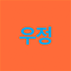

나의 사적인 예술가

시놉시스
한때 시인이었으나 지금은 뉴욕의 우체국에서 일하며 평범하게 살고 있는 에드는 오래전 자신이 쓴 시집에 열광하는 젊은 예술가 지망생들을 만나게 된다. 생전 처음 겪는 반응에 당혹해하던 그는 스타를 꿈꾸는 배우 글로리아를 알게 되며 미묘한 감정을 느낀다.
리뷰
27회 전주국제영화제의 개막작인 <나의 사적인 예술가>로 베니스국제영화제에서 전 세계 최초로 공개됐다. 영화의 주인공 윌럼 더포는 독특한 필모그래피를 형성한 배우로 블록버스터부터 독립영화까지 규모를 구분하지 않고 출연하며 베니스국제영화제, 베를린국제영화제 등 유수 영화제에서 배우상을 수상했다. 그레타 리는 수많은 영화와 드라마에 출연했고 <패스트 라이브즈>(셀린 송, 2023)를 통해 국제적으로 이름을 알린 바 있다. 최근에는 유명 시리즈 「더 스튜디오」를 비롯해 할리우드 대작들로부터 많은 러브 콜을 받고 있다. 이 두 배우를 예술계에 관한 이야기 속으로 불러 모은 중심축은 켄트 존스 감독이다.
켄트 존스는 프랑스 영화잡지 『카이에 뒤 시네마』(최근 리차드 링클레이터 감독의 영화 <누벨 바그>(2025)에서 조명된 잡지이기도 하다)의 용도처럼 영화평론가로 경력을 시작했다. 당시에는 인쇄된 영화잡지가 영화계에서 중요한 부분을 차지하던 시절이었고, 인터넷과 소셜 미디어가 존재하지 이전이었다. 존스가 편집을 맡았던 『필름 코멘트 Film Comment』와 같은 잡지들은 여러 세대에 걸쳐 영화에 대한 지식을 전달하고(비평을 통한 교육), 당시 영화계의 흐름을 파악하고 과거를 되짚어보는 데 기여했다. 인터넷과 소셜 미디어의 등장 과정에서 잡지가 소멸되고, 주류 언론의 영화와 평론에 대한 관심이 감소하면서 영화 비평의 황금기였던 그 시절은 막을 내렸다.
비평가로서의 활동을 통해 존스는 마틴 스코세이지와 같은 거장들과 협업하기 시작한다. 처음에는 시나리오 작가로 시작하여 나중에는 영화 역사에 관한 다큐멘터리 시리즈의 공동감독으로 참여한다. 대표적인 작품으로는 <나의 이탈리아 여행기 My Voyage to Italy>(1999)과 <엘리아에게 보내는 편지 A Letter to Elia>(2010)가 있다. 단독 감독 데뷔작 역시 영화사를 다룬 다큐멘터리 <히치콕 트뤼포 Hitchcock/Truffaut>(2015)였다. 그는 평론가, 시나리오 작가, 감독으로서의 경력을 쌓으면서 동시에 프로그래머로서도 활발히 활동했다. 2002년부터 뉴욕영화제 프로그래밍에 관여해 2012년부터 2019년까지 링컨센터 필름 부문과 뉴욕영화제 위원장을 역임했다. 장편 극영화 데뷔작 <다이앤 Diane>(2018)을 공개하고 영화제 위원장 직을 내려놓은 그는 2025년 <나의 사적인 예술가>를 베니스국제영화제에서 공개했다.
<나의 사적인 예술가>의 주인공 에드 색스버거는 70세를 바라보는 남자로 우체국에서 일하며 톨에 박힌 고독한 삶을 살고 있다. 하지만 그는 젊은 시절 시를 써서 시집을 출간하기까지 한 시인으로 수십 년 전에는 음악가, 미술가, 작가들이 서로의 세계를 넘나들던 뉴욕의 예술계와 보헤미안 문화에 속했던 인물이었다. 그가 시인의 길을 포기한 이유는 알 수 없는데, 어느 날 뉴욕의 과거와 그 속에서 살아가는 사람들을 통해 젊은 작가 무리가 등장해 에드의 삶을 뒤흔든다. 그는 인생에서 내렸던 선택을 되짚하고, 무엇이 달라질 수 있었던 것인지 자문한다. 어쩌면 다시 시를 다시 쓰게 될지도 모른다. 하지만 예술계의 삶 그 속에서 살아가는 사람들의 비참함, 계급 차이는 그가 한때 벗어나 있던 세상의 실체를 드러낸다.
19세기 빈 모더니즘의 대표 작가 아르투르 슈니츨러의 동명 소설을 바탕으로, 켄트 존스 감독은 과거를 버리지 못하는 현대 뉴욕을 그려내면서도 전직 시인인 주인공을 통해 예술가들의 삶 뒤에 숨겨진 허영과 두려움을 드러내고 그 신비로움을 벗겨 낸다. <나의 사적인 예술가>는 재발견된 예술가라는 한 편의 우화적 구성에 현실을 바무려 시와 유머, 따뜻함이 일상의 고통과 공존하는 세계를 보여준다.
켄트 존스의 경력이 말하듯, 이들 영화와 비평, 영화제라는 분야의 역사를 대표하는 인물이다. 이에 전주국제영화제는 그의 신작과 함께 27회 개막을 하게 된 것에 자부심을 느낀다. (문성경)
키워드
